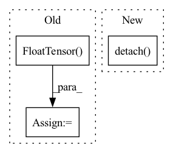

Pattern ID :25749
Before Change
MSLE loss between transformed scRNA reference expression (prediction) and cell-mixture expression.
ref_x = torch.FloatTensor( ref_x) .to(self.device)
y = torch.FloatTensor(y).to(self.device)
y_pred = self.model(ref_x)
criterion = MSLELoss()
model_score = criterion(y_pred, y).item()
return model_score
After Change
true_prop = true_prop/torch.sum(true_prop,1, keepdims=True).clamp(min=1e-6)
loss = ((pred - true_prop)**2).mean()
return loss.detach() .item()
In pattern: SUPERPATTERN
Frequency: 3
Non-data size: 3
Instances Fragment ID: 77997766
Project Name: omicsml/dance
Commit Name: a855ce69879f38203fcf3b25231fa74cfaf3ae05
Time: 2022-08-14
Author: venegas5@msu.edu
File Name: dance/modules/spatial/cell_type_deconvo/spatialdecon.py
M Class Name: SpatialDecon
N Class Name: SpatialDecon
M Method Name: score(3)
N Method Name: score(3)
M Parent Class:
N Parent Class:
M File Name: dance/modules/spatial/cell_type_deconvo/spatialdecon.py
N File Name: dance/modules/spatial/cell_type_deconvo/spatialdecon.py
M Start Line: 183
M End Line: 189
N Start Line: 207
N End Line: 211
Before Change
values = torch.cat(self.values_buffer, 0)
log_probs = torch.cat(self.policy_net.log_probs, 0).unsqueeze(1)
rewards = torch.FloatTensor(self.policy_net.rewards).unsqueeze(1)
next_observation = torch.FloatTensor( self.next_observation_buffer)
delta = rewards + self.value_net.forward(next_observation) - values
policy_loss = (- delta.detach() * log_probs).sum()
self.writer.add_scalar("policy_loss", policy_loss, self.count)
self.policy_optimizer.zero_grad()After Change
self.count = 0
def train(self, ):
total_returns = torch.FloatTensor(self.total_returns).unsqueeze(1).detach()
values = torch.cat(self.values_buffer, 0)
delta = (total_returns - values).squeeze(1)
log_probs = torch.cat(self.policy_net.log_probs, 0)
Fragment ID: 77997767
Project Name: deligentfool/policy_based_rl
Commit Name: 9d518ba00b25c97cc245018a865fd6af909c8069
Time: 2020-05-03
Author: 1027660817@qq.com
File Name: A2C/advantage_actor_critic.py
M Class Name: advantage_actor_critic
N Class Name: advantage_actor_critic
M Method Name: train(1)
N Method Name: train(1)
M Parent Class: object
N Parent Class: object
M File Name: A2C/advantage_actor_critic.py
N File Name: A2C/advantage_actor_critic.py
M Start Line: 77
M End Line: 83
N Start Line: 80
N End Line: 86
Before Change
coefficient of determination of the prediction (final non-negative linear module).
x = torch.FloatTensor( x) .to(self.device)
y = torch.FloatTensor(y).to(self.device)
W, H_profile, B, P = self.forward(x, y, cell_types=cell_types)
B_pred = self.nnls_reg2(H_profile)After Change
true_prop = true_prop/torch.sum(true_prop, 1, keepdims=True).clamp(min=1e-6)
loss = ((pred - true_prop)**2).mean()
return loss.detach() .item()
Fragment ID: 77997772
Project Name: omicsml/dance
Commit Name: 954e7fcd40b28b359d702e5d3da454b1a7c2ab58
Time: 2022-08-14
Author: venegas5@msu.edu
File Name: dance/modules/spatial/cell_type_deconvo/spotlight.py
M Class Name: SPOTlight
N Class Name: SPOTlight
M Method Name: score(3)
N Method Name: score(4)
M Parent Class:
N Parent Class:
M File Name: dance/modules/spatial/cell_type_deconvo/spotlight.py
N File Name: dance/modules/spatial/cell_type_deconvo/spotlight.py
M Start Line: 264
M End Line: 289
N Start Line: 308
N End Line: 314